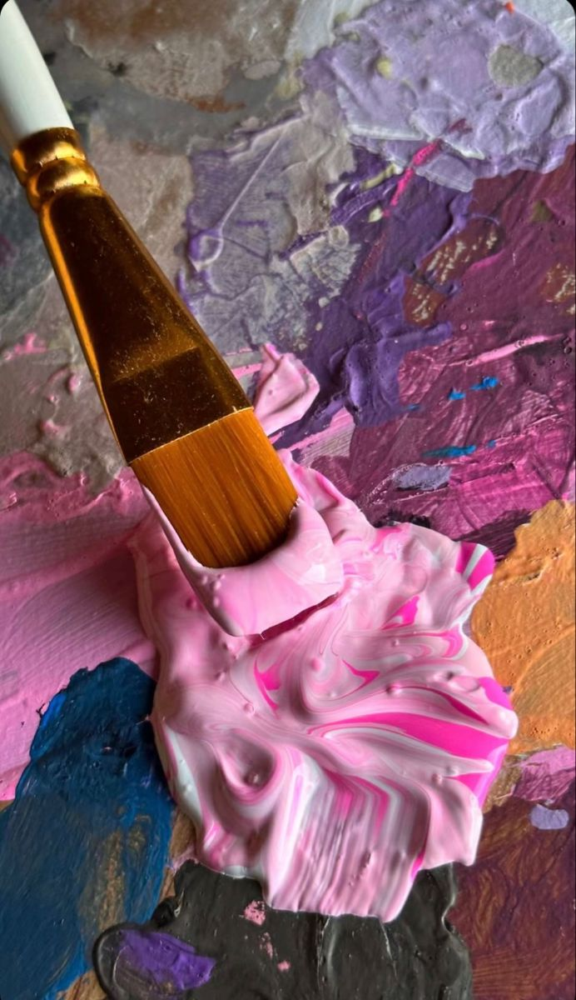
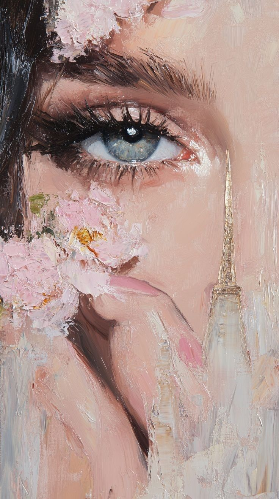
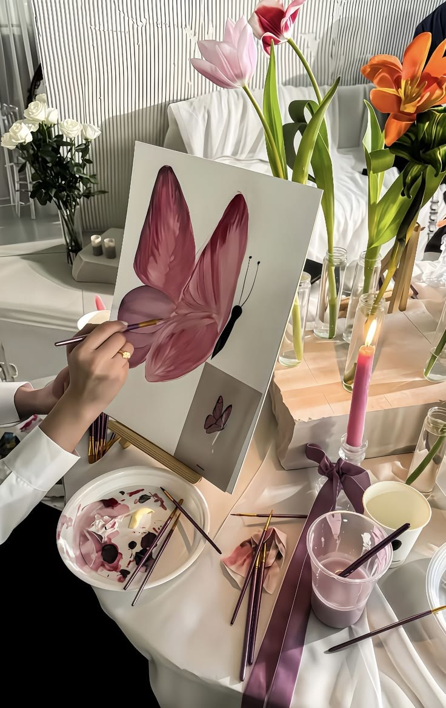
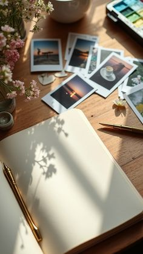
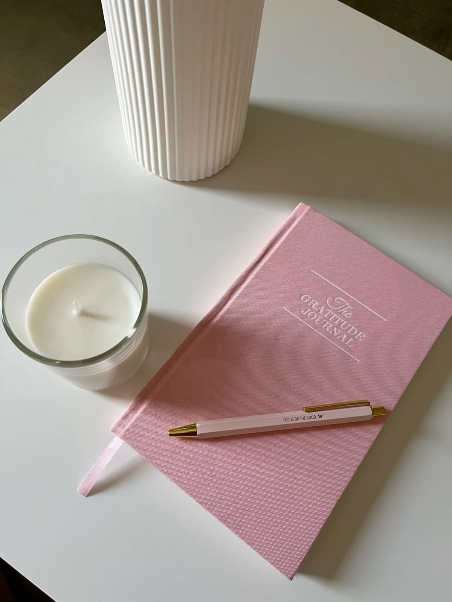

Art is one of my most creative hobbies. I enjoy expressing ideas and emotions through painting as well as creating decorative pieces using paper crafting techniques. Working on art projects helps me relax and improves my focus and patience.
Why I Love Creating Art
- It allows me to express creativity freely.
- Painting helps me relax and clear my mind.
- Paper crafting lets me experiment with colors and designs.
My Art Creations




